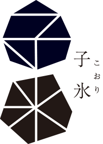
 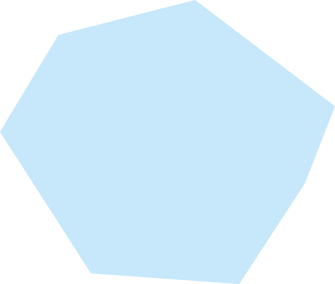
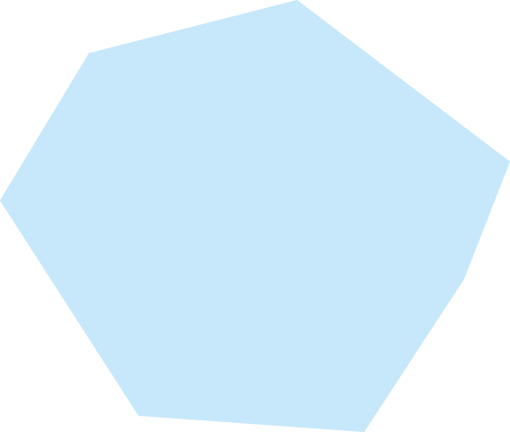
製法について
子氷（こおり）は、
日本の伝統的な和菓子と冷たい氷の絶妙な冷たさを楽しむことができる、和スイーツです。
この特別なお菓子は、口に含むとひんやりとした涼しさと、口の中でふわっと広がる和の味わいが楽しむ事ができるように特別な製法で作成しています。
子氷（こおり）は、
氷の表面に和菓子の素材を結晶化させ、氷の中に和菓子の風味を閉じ込めることで、独特の食感と味わいを実現しています。そのため、氷菓子氷は一口食べるだけで、日本の伝統的な和菓子の風味を存分に楽しむことができるように、職人の熟練した技術と手間暇をかけて行われます。
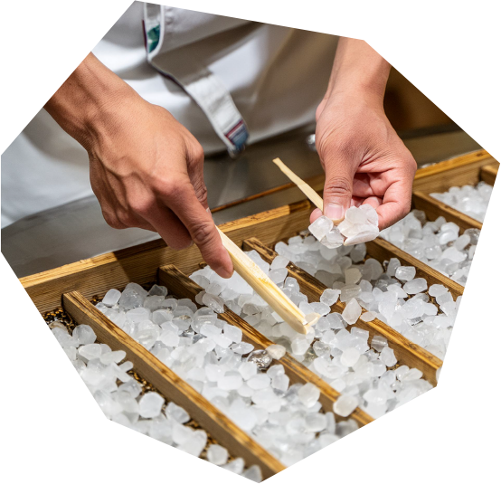
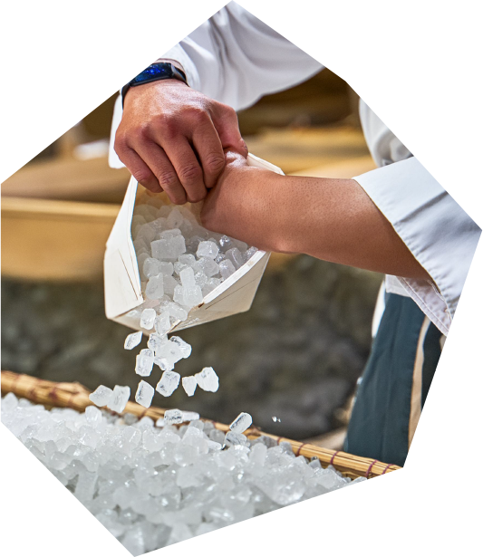
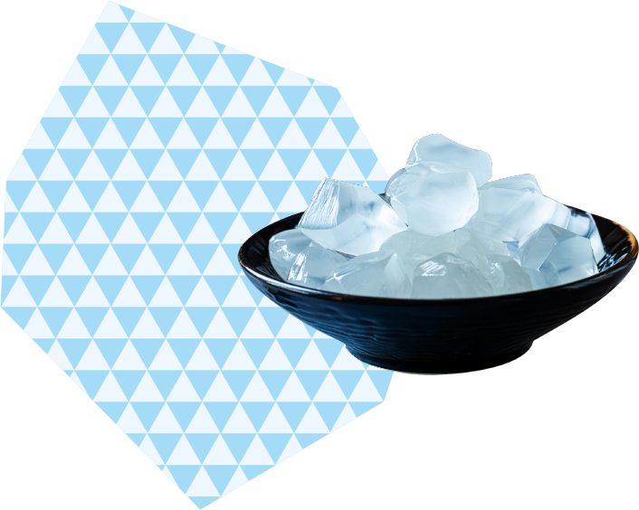
澪 Mio
澪Mioは、
ミントの風味が凝縮されたシロップがかけられています。見た目は清涼感を感じさせる一方で、一口食べると、ミントのさわやかな香りと風味が口の中に広がり、口の中を心地よく冷やしてくれます
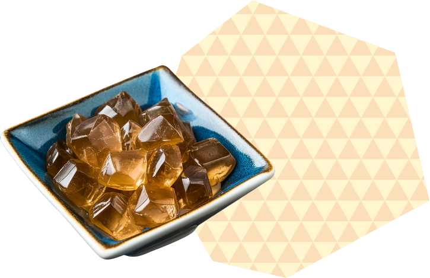
琥珀 Kohaku
琥珀 Kohakuは、
蜜の粘り気が感じられる蜜がまんべんなく塗り、蜜の艶やかさが感じられます。一口食べると、口の中には蜜の甘さが広がります。蜜の風味は深く、芳醇でありながら、口当たりは軽やかで優しさに満ちています。
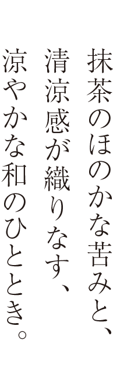
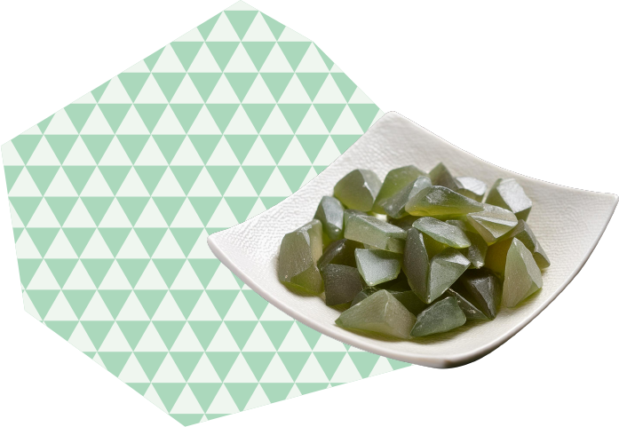
緑祭 Ryokusai
緑祭 Ryokusaiは、
京都の宇治抹茶を使用しています。表面には滑らかな氷の層があり、その上にほんのりと抹茶の苦みが感じられる粉末がまぶされています。一口食べると、ふわりと広がる抹茶の香りが口の中に広がり、涼やかな清涼感をもたらします。
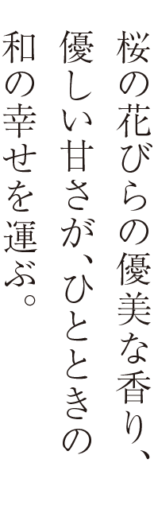
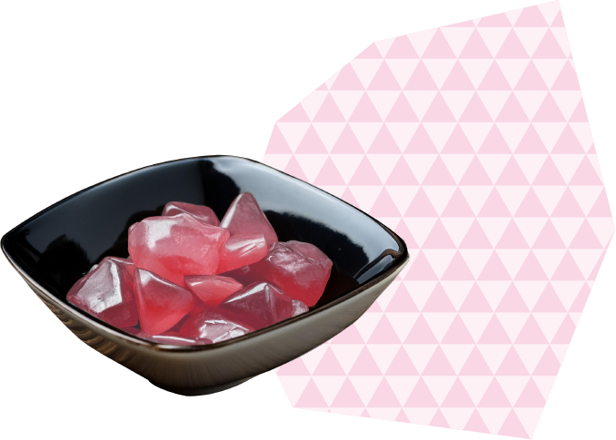
桜花 Ouka
桜花 Oukaは、
桜の花びらや桜の葉から抽出されたエキスを使用しています。見た目は透明な氷の層で、その表面には淡いピンク色の桜の花びらが散りばめられています。
一口食べると、ふわりと桜の香りが鼻腔に広がり、春の訪れを感じさせます。
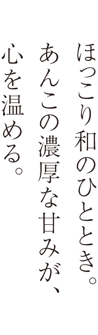
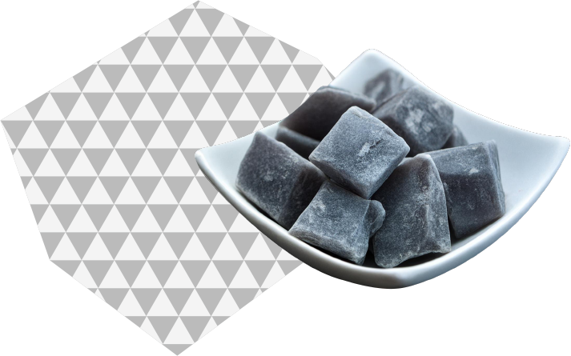
黒曜 Kokuyou
黒曜 Kokuyouは、
あんこの粒やペーストが散りばめられています。一口食べると、ほんのりとした甘さと、あんこの濃厚な風味が口の中に広がります。さっぱりとしている一方で、あんこの甘みとねっとりした食感が特徴です。